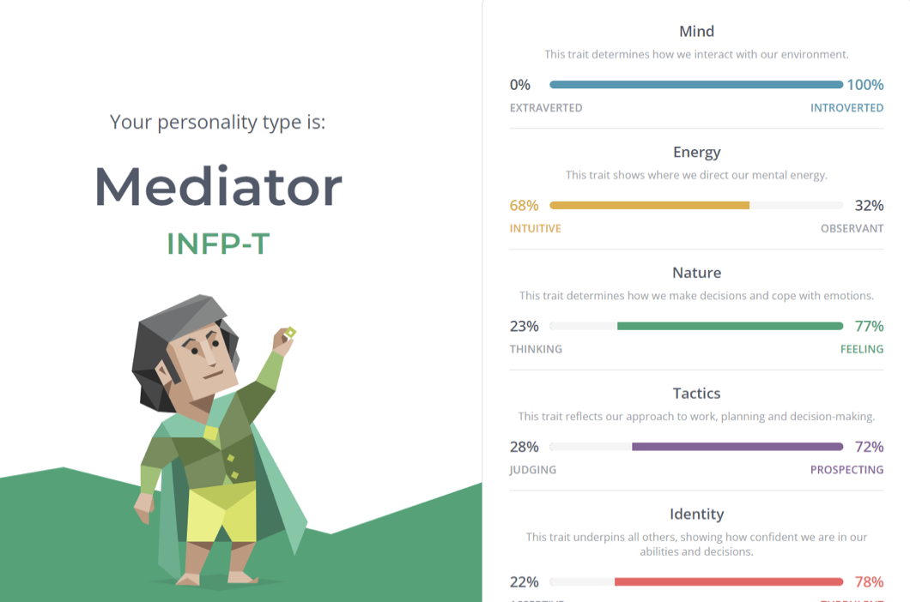

Dean Heighway
Student ID: s3925053

My name is Dean Heighway and I'm a 27-year-old born in Australia and of Australian decent, in my lifetime Ive only ever spoken English and I've learned beginner levels or Italian. My highest level of education is finishing the HSC and also, I have completed a semester of a Bachelor of Nutrition.
I love all sports but have a keen interest in cricket, currently my season has just finished last week as my team lost in the semifinals however, I am enjoying watching the current tour of Australia to Pakistan.
My interest in IT stems from a long history of video games and love of computers, ever since I was four years old, I remember playing Warcraft 2 and StarCraft with my dad in his spare time and from then I was hooked in gaming. Over time my love of gaming developed into wanting a further understanding of the ins and outs of computers and the how and why of games; what powers them? How are they built?
I have worked for 7 years at Coles where I was developing a career there, starting as a casual for a few years then I moved onto a bakery manager at my first store and then only 6 months later I was promoted to a larger bakery. A year on from that and I was made Dry Goods (Grocery Manager) and was responsible for around 700k in sales per week, after 6 months in that role I decided a career in Coles wasn't for me so I started working towards this course in the meantime.
I have very limited IT experience at the moment but its quickly growing throughout the duration of this course.
I choose RMIT for my studies as it is one of the leading IT programs in the country and it also offers the convenience of online study, being someone who works full time I can't attend standard university so I opt for the convenience of online. I expect to obtain a greater understanding of how computers work both internally and externally as well as a deeper understanding and competency of programming languages.
Personality Profile
I completed the online test for MBPT and got the result of INFP this means that I am introverted with an intuitive type of energy with a feeling nature. The tactics that I use are prospecting and the identity is turbulent.

I then completed a learning style quiz with a very split set of results: Auditory learning was 30%, visual learning was 35% and tactile 35%. From this result I learned that things that would help me the most would be visualizing that I hear, writing down key words ideas or instructions and importantly avoiding distractions during my study time.
For the tactile side it suggests hands on learning and taking short sharp bursts of study periods as well as using a computer to reinforce learning through the sense of touch. In a team environment this could potentially clash with someone who takes a more structured approach to work, where they chip away at the work over longer periods of time instead of brief bursts of productivity, this would be overcome just by getting a better understanding of one another and create the understanding that people operate differently.
Lastly, I did a big five personality test at truity.com and it measured my personality to be OCEAN: Openness, Conscientiousness, Extraversion, Agreeableness, and Neuroticism.

From these tests I can deduce that I am an empathetic individual who works well as a team and doesn’t cause problems or have personality clashes. Within a team environment I believe that this makes me a great asset as I would stay on focus and be able to contribute to the project through my own ideas and contributions as well as being able to bring the best out of others. I think when forming a team to mix with my abilities it would be great to get someone who is very structured with their approach, someone who is a bit more extraverted and more direct with their ideas and the direction they want to take things, I believe that opposites work well together and that is why a person with those attributes would be great alongside me so that we can cover all the bases for a great team.